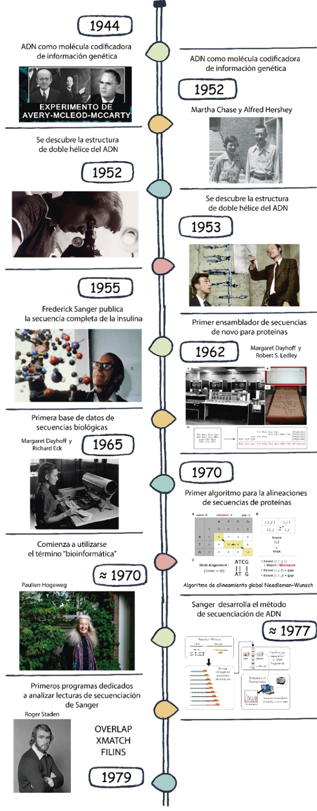
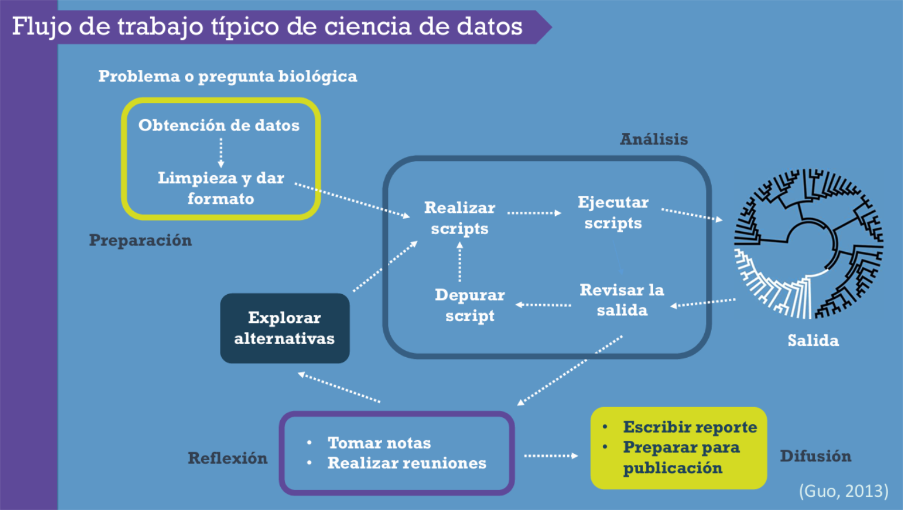
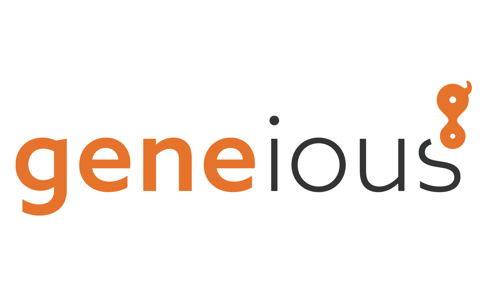

Unidad 1. Introducción a la Bioinformática
Introducción
En las últimas décadas, la biología ha experimentado un crecimiento sin precedentes en la generación de datos, impulsado principalmente por el desarrollo de tecnologías de secuenciación y por el avance de diversas disciplinas ómicas. Este incremento ha planteado nuevos desafíos relacionados con el almacenamiento, manejo, procesamiento, análisis y movimiento de grandes volúmenes de información biológica, lo que ha llevado a la incorporación de enfoques computacionales, técnicas de datos masivos (big data), minería de datos (data mining) y ciencia de datos (data science) en la investigación biológica.
Ante este escenario surge la bioinformática, un campo que integra conocimientos de la biología, la informática, la estadística y las matemáticas, con el objetivo de extraer información significativa a partir de datos biológicos complejos.
Debido a su amplitud, la bioinformática es un término difícil de definir de manera única y ha sido utilizado con distintos alcances. En este sentido, Soberón y Peterson (2004) proponen que el término bioinformática se aplique, de manera general, al análisis computacional de datos provenientes principalmente de la genómica y la proteómica, mientras que el manejo y análisis de grandes volúmenes de datos asociados a la biodiversidad a gran escala corresponde al ámbito de la informática de la biodiversidad.
Desde esta perspectiva, la bioinformática puede considerarse una aplicación de la ciencia de datos al estudio de sistemas biológicos, enfocada en el análisis computacional de grandes volúmenes de información generados por las disciplinas ómicas.
Breve historia de la bioinformática
El desarrollo de la bioinformática está estrechamente vinculado a los avances en la biología molecular y a la necesidad de analizar datos cada vez más complejos. El reconocimiento del ADN como molécula portadora de la información genética, el descubrimiento de su estructura de doble hélice, la primera secuenciación completa de una proteína y la creación de las primeras bases de datos de secuencias marcaron hitos fundamentales que hicieron evidente la necesidad de herramientas computacionales.
Posteriormente, el desarrollo de algoritmos para el alineamiento de secuencias y el análisis automatizado de datos sentó las bases de la bioinformática moderna. Estos avances muestran que la bioinformática no surge como una disciplina aislada, sino como una respuesta natural a la creciente complejidad de los datos biológicos.

Áreas de aplicación de la bioinformática
La bioinformática abarca una amplia variedad de campos, entre los que se incluyen:
- Filogenómica y evolución molecular, orientadas a la inferencia de relaciones evolutivas entre especies y al estudio de la evolución de genes y proteínas.
Transcriptómica y proteómica, enfocadas en el análisis de la expresión génica, la cuantificación de transcritos y proteínas y la predicción de su función.
Metagenómica y estudios de microbiomas, dedicados al análisis de comunidades microbianas en distintos ambientes.
Biología de sistemas, centrada en el modelado de redes biológicas y la simulación de procesos complejos.
Bioinformática estructural, que incluye el modelado tridimensional de proteínas, el docking molecular y la dinámica molecular.
Aunque estas áreas difieren en sus objetivos biológicos, todas comparten principios comunes relacionados con el manejo de datos, la automatización de análisis y la interpretación de resultados computacionales.
Flujo de trabajo bioinformático y ciencia de datos
La bioinformática se desarrolla dentro de un flujo de trabajo típico de ciencia de datos, el cual es iterativo y comienza con una pregunta biológica para culminar con la interpretación y comunicación de resultados.

Etapas del flujo de trabajo:
Problema o pregunta biológica
Definición clara de la pregunta que guiará el análisis.Preparación de los datos
Obtención, limpieza y formateo de los datos para su análisis computacional.Análisis computacional
Escritura y ejecución de scripts, depuración de errores y exploración de alternativas.Salida e interpretación de resultados
Organización, visualización e interpretación de los resultados obtenidos.Reflexión y difusión
Documentación del análisis, discusión de resultados y preparación de reportes o publicaciones.
La documentación y organización del análisis son esenciales para garantizar la reproducibilidad en bioinformática.
Herramientas computacionales y enfoque del curso
En la actualidad existe una gran diversidad de software bioinformático, y su número continúa creciendo rápidamente. Existen incluso recopilaciones extensas de programas bioinformáticos disponibles en línea, como la mantenida por la Universidad de Göttingen, que ilustran la magnitud y variedad de herramientas desarrolladas para el análisis de datos biológicos. Ante este panorama, aprender a utilizar cada herramienta de manera individual resultaría imposible.
Por esta razón, el objetivo de este curso no es la especialización en herramientas específicas, sino el desarrollo de habilidades fundamentales que permitan comprender, ejecutar y evaluar cualquier herramienta bioinformática, independientemente de su área de aplicación.
A lo largo del curso se trabajará principalmente con herramientas que se ejecutan desde la línea de comandos, poniendo énfasis en:
la organización de archivos y proyectos,
la ejecución y automatización de análisis,
la comprensión de flujos de trabajo reproducibles, y
el monitoreo del uso de recursos computacionales.
Estas bases nos permitirán adaptarnos con facilidad a nuevas herramientas, entender su documentación y evaluar críticamente sus resultados, sin depender de un software o plataforma específicos.
Nota
Existen programas bioinformáticos con interfaces gráficas muy bonitas que hacen casi todo con un clic… pero suelen ser de paga y bastante caros (por ejemplo, Geneious).

En cambio, la mayoría de las herramientas que se ejecutan desde la línea de comandos son gratuitas, flexibles y reproducibles.
Así que, si tu laboratorio tiene presupuesto, pedir Geneious es opción.
Si no (lo más común), aprender Bash te permitirá hacer lo mismo —y muchas veces más— sin pagar licencias.
Y sí: Bash nunca pasa de moda 😉